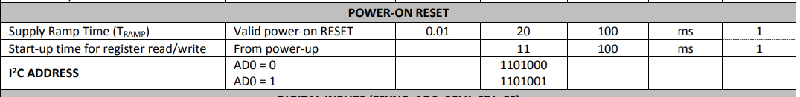
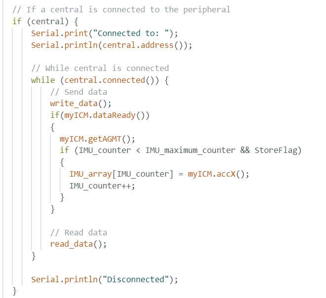
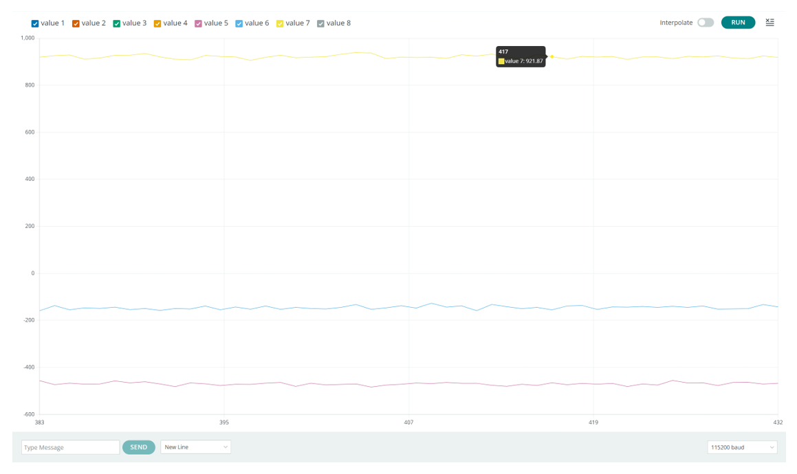
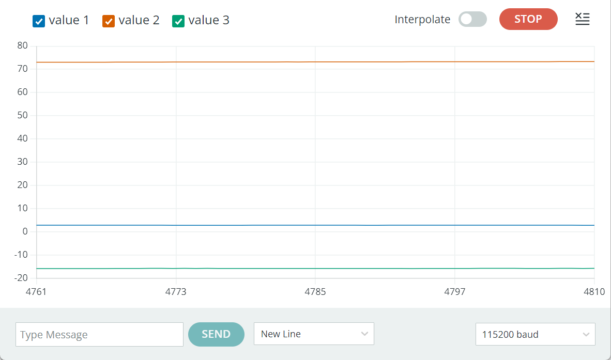
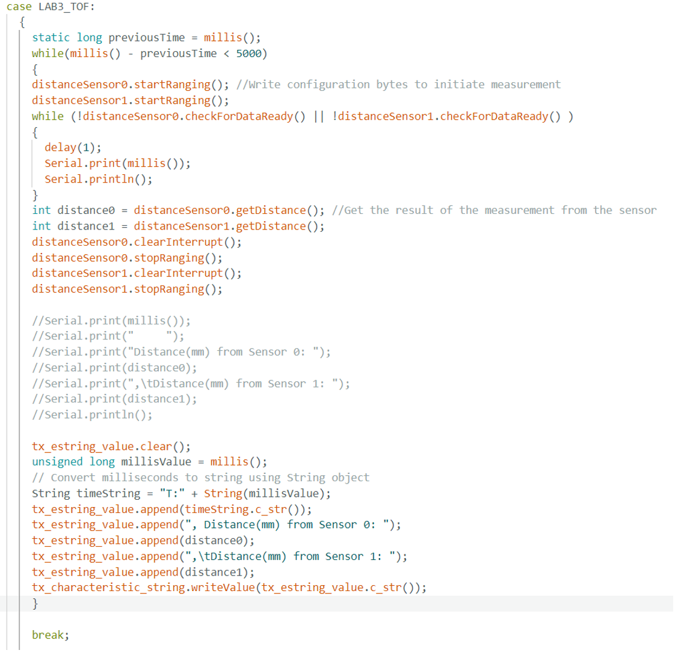
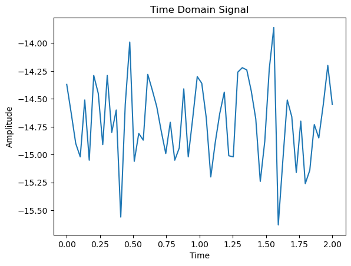

FENGKAI TANG
ft243@cornell.edu
ft243@cornell.edu

Fengkai TANG was awarded the degree of BEng Hons Electrical and Electronic Engineering in the First Class classification from The University of Nottingham.
Fengkai TANG now works on MEng Electrical and Computer Engineering program at Cornell University, where he had a deeper understanding on AI/ML, embedded computing and CS Algorithms.
According to the Setup instructions, install the latest Arduino IDE and Sparkfun Appollo 3 support software on the laptop. After installing everything correctly, there are some start-up examples in the Arduino IDE, and we start our journey to Arduino.
Load the blink example file just following the steps in the online instruction webpage. Different from the tutorial, the real board we were using is RedBoard Artemis Nano instead of BlackBoard Artemis. Also, choose the corresponding port otherwise the Arduino IDE will not find the device to upload the code. As shown in the video, the delay time is set to 1000ms, that is, the LED should blink every 1 second.
To use the serial monitor, the baud rate should set the same as the baud rate definition in the code. If not, the serial monitor may display wrong information. In this task, the baud rate is set 115200. In the code, we print some lines first, and in the loop, the serial monitor will output what we type in. The board is continuously reading and then outputting on the serial monitor.
The board continuously reads the analog signal and outputs to the serial monitor. From serial monitor we can see the real-time temperature. We can notice the small increase of the temperature by touching the board chip.
The board will analyze the signal by carrying out FFT operation. The loudest frequency will be displayed in the serial monitor in real time. The loudest frequency represents the frequency of the loudest signal received by the sensor.
I planned to let the chip detect musical A4 note. Referring to the Microphone Output example code, I knew the frequency of musical A4 note is 446Hz. Therefore, a basic logic code can be written as if the loudest frequency is 446Hz, turn on the LED, otherwise turn off the LED. Coding is quite simple, we can just combine the Task 1 and Task 4 code. Code looks like this:
if(ui32LoudestFrequecy == 446)
{
digitalWrite(LED_BUILTIN, HIGH);
}
else
{
digitalWrite(LED_BUILTIN, LOW);
}
Follow the prelab steps, which are detailed, to set up the environment for python and BLE. BLE (Bluetooth Low Energy) is used for communication between Arduino board and Laptop. Jupyter lab will be used to run the python code. I installed python myself but strangely I did not install python3. In this case, any “python3” command must be replaced by “python” command. Initially I did not realize this problem, so I spent lots of time creating the virtual environment. Another problem here was that the virtual environment cannot be activated. Use the command “Set-ExecutionPolicy -Scope CurrentUser -ExecutionPolicy Unrestricted” first and then the virtual environment can be activated successfully. Load the python files through the jupyter lab and set up the necessary libraries for Arduino, we can then start our first step: find the MAC address.
After running the ble_arduino.ino, the MAC address for my board is c0:89:d:6c:2d:4b. Remember that the MAC address should be 12-digit long, so I left padded one 0 to make MAC address c0:89:0d:6c:2d:4b.

Use uuid4() to create my own unique UUID for connecting my laptop and my nano board. Replace the BLEService UUID in ble_arduino.ino file and replace the ble_service in connections.yaml file with this generated UUID. Also, in connections.yaml file, update the MAC address with our address. One important thing here, after changing the parameters in ble_arduino.ino, we should update again otherwise we cannot connect to the device.

A good start is to try the function in demo.ipynb file to test if all the libraries are working fine. After changing the configuration of connections.ymal file and ble_arduino.ino file, it is expected to connect successfully. In demo.ipynb, we tested the receive_float, receive_string function and PING command. Everything looks good and we can start to do the task. All the task codes will be written in demo.ipynb file.

The task is that the computer will send a string to the nano board, and we need to get the nano board to read this string and add a specific prefix “Robot says ->” and suffix ":)". The code is very easy to implement, we need to extract the string, then prefix append the string and then append the suffix.

Then, in the python file, call the ECHO command and use the receive_string function we have tested in demo to receive the generated string (with prefix and suffix).
This task requires a GET_TIME_MILLIS Command to get the time. We can use millis() function and convert it to a string. Add the prefix “T:” and send it back to the laptop. The curly bracket was added here because without it nano board cannot be updated with the code.

Before calling GET_TIME_MILLIS command, we should add GET_TIME_MILLIS to cmd_types.py and ble_arduino.ino. If not, we cannot call this command and cause an error.


At last, call this command and we should get the time with “T:” prefix.

With the help of callback function, a notification handler can be set up to receive the string value. I named my callback function stringhandler. In my callback function, the string is split with a colon, and use a global variable “time_value” to store the time. Use ble.start_notify() function to start the notification handler. We can see below, “time_value” is only the time while “s” contains “T:” and time. This means that the notification handler is working well.

We can find a loop() function in ble_arduino.ino file, and in loop() function we can find a write_data() function to send data. Therefore, I planned to change the write_data() function to make nano board send time data continuously in the loop.
Collect 5 seconds time data, and put all the time data into “data_collector”. Use the notification handler again to extract the wanted time data.

The length of the “data_collector” is the number of time data we have received. We can use the last element of “data_collector” minus the first element of “data_collector”, which is the time duration used for transmitting data. Use the number of time data divide the time duration (remember to change microsecond to second), and this is the data rate.

Create an array to store the time stamps. Make it global in case other functions will access it.

Similar to Task 4, the code needs to be in a loop. Write the code in the write_data() again and comment the code used for Task 4. The if logic prevents from over-filling the array. At last, timeStamps[] array should contain 100 time data.

Similar to Task 2, create a SEND_TIME_DATA command (remember to add it in cmd_types.py file). After all the time data is sent, I designed to send one more “END” data to show all data has been transmitted.
I designed a new callback function stringhandler2, which can detect the “END” message. However, it seems that it is not very useful. I think t I think this design might be useful in the future, so I keep it here.

Again, write the code in the write_data(), which is in a loop. Each element in time stamps array and temperature array should correspond, so every time put in a new element, the element number should be the same (timeStampIndex in the code shown below).

Add a new command GET_TEMP_READINGS. Each time the nano board send back a time data and a temperature data split with a comma.
A new callback function stringhanlder3 was designed. Split the message with comma and put the first one into time list and the second one into temperature list. At last, 100 corresponding time data and temperature data is sent and stored in each list.
One method is an instant send method and one is a batch store and send method. The instant send method sends the data as soon as it is generated (Task 4), the advantage is that the data can be monitored in real time, the disadvantage is that if the connection is unstable, it will lead to data loss. The disadvantage is that the data can be lost if the connection is unstable. The batch store and send method is that the data is stored locally first and then sent later. The advantage is that the data will not be lost, the disadvantage is that there may be a delay.
384kB = 384 * 1000 Byte = 384000 Bytes = 384000 * 8 bit = 3072000 bits
If the timestamp is a 4-byte integer and the temperature reading is a 4-byte floating point number, then the size of each data point is 8 bytes. 384000 Bytes / 8 = 48000 data point. However, this is not possible because not all the RAM will be used for sending data.
I cancel the delay in temperature read rapidly command and use it to send 5000 groups of data. After checking, the data are all right. BLE communication is reliable, there should be some verification mechanism in BLE communication.
In this lab, BLE (Bluetooth Low Energy) method is used for communication between Artemis (C compiled by Arduino) and Laptop (Python running in Jupyter lab).
The setup for lab2 is relatively complicated. On Laptop, a virtual environment with Python was installed. The Jupyter Lab is launched to run the Python code module by module and show the communication content. On the Artemis side, the ArduinoBLE library was added.
After running ble_arduino.ino, from the serial monitor, I saw the MAC address of my Artemis is C0:83:B4:69:AC:3C.
Copy this address in connection.yaml and use uuid4 function to generate the new UUID as below. Use the new UUID to replace the demo UUID in several places. Then the setup of this lab is finished.
The main part of the codebase is demo.ipynb which can run in Jupyter Lab with the help of other commands from library ble.py. The successful run of this demo code means the correct setup of hardware and environment. After running the demo, the content shown in Jypyter corresponds with the content in the serial monitor as below. The MAC address of my laptop is shown through the serial monitor (F4:5C:89:C1:4F:A8).
On Artemis side, code as below to read the string from the laptop and send it back with prefixes and suffixes. Also, output the content in serial monitor with prefix.
On the Laptop side, call the ECHO command with a specific string. The results of this task are as below.
Use the millis function to get the time of Artemis (in ms), convert it into a string and send it to the laptop.
Design a “strprocessor” to deal with the string from Artemis, split it with “:” and the second part is the value of time without prefix. Use ble.start_notify function to call it, which makes sure it will work when a new string comes in.

Design a new strprocessor to deal with a group of five temperatures with time to make the raw string more readable.
For the purpose of getting 60 temperatures in 5 seconds, we do not have to make them by groups. We can just convey the information one by one, and delay for 80ms between every communication.
From 1405545 to 1410442, 60 temperatures with time are transferred and processed successfully.
Suppose X% RAM is for the use of sending, total bit for sending = 384*1000*8*X% = 3072000*X%. Total bit in one module of the specific form = 5*16*150 = 12000. So, the maximum number of this type of module is 256*X%.
I use the simplified ECHO command to measure the time interval between sending and receiving with 1B, 2B, 3B, …, 120B messages. Calculate the data rate by byte/(2*time).

Plot in Excel. I found that the longer packet can make a bigger Byte rate. However, there are a few downward fluctuations in the speed of large packets, which may be caused by transmission errors, checksum retransmissions.
I cancel the delay in temperature read rapidly command and use it to send 5000 groups of data. After checking, the data are all right. BLE communication is reliable, there should be some verification mechanism in BLE communication.

In this lab, the TOF sensors are set up and used. There are several specific problems that need to be solved during the application.
I put 3 devices on the I2C wire, two TOF sensors, and one IMU.
Run the I2C example code. I got the result below. Only two devices are identified (0x29 and 0x69). That makes sense because two TOF sensors share the same I2C address.

To simultaneously make use of two TOF sensors, shut down any one of them and change its I2C address. The XSHUT pin will be used to realize the method. Do not forget to turn it on after setting the new address. The sketch is as below.
For the placements of these two sensors, I think putting them on the left-front and right-front is a good idea, especially for the purpose of forward obstacle avoidance.
There are only two modes in fact, short for 1.3m and long for 4m. Taking the size of the robot(car) into consideration, 1.3m is enough for the guidance of its movement. If we want to position the car using the distance from the boundary, the long mode may be more appropriate. Therefore, I use the short mode for the following tasks.
I measure the distance of 100mm, 200mm, 300mm, …, and 1300mm using one TOF sensor under two light conditions, got the result, and plot them using excel. Generally, it is accurate, maybe a calibration can be applied to deal with the unidirectional errors. The result in dark circumstances is more closed, probably caused by less light disturbance.

To use two TOF sensors simultaneously, I code as below when setup these sensors and take the outcome as a video.

Slightly modify the loop of the example as below.
In the result, the clock values were output with intervals of 4ms, the results were output with intervals of roughly 100ms. That means I can get the double distance information 10 times per second. The velocity of ADC may be the key factor that limits the speed.

Use the framework in lab2, and create a new command called TOF in Jupyter Lab. On the Artemis side, fit the setup part and get-value part in.
Infrared light is invisible light and there are a lot of infrared rays present in the daily environment. All these infrared rays will inevitably affect the infrared sensor. Therefore, when designing, choose a specific wavelength of infrared light as the medium to resist interference as much as possible; when using, do not use it in places where the light source is too strong. In the first part, the TOF sensor can show better performance under dark light conditions.
I tried several colors of reflective surfaces on hand, which had little effect on the results. In theory, darker objects would absorb more light to cause less return energy, but in practice I did not notice this effect. For glass-like surfaces, I found that the sensor even went through the glass to measure the distance to the object behind the glass, which is unacceptable. Presumably, ultrasonic distance sensors can avoid this problem to some extent, due to the different properties of electromagnetic and mechanical waves.
In this lab, the IMU sensor is set up and used. There are several specific problems that need to be solved during the application.
I use the break board to connect all the sensors I have together, through one I2C wire.

Run the IMU example code. The result in the video indicated that I set up the system rightly. Actually, the code has been run in our lecture before. I added some LED blink when start-up and IMU sudden move.
AD0_VAL can be used to change the I2C address of the IMU, I found it in the datasheet.
Apparently, it is very convenient when we want to use 2 IMUs on the same I2C wire. We do not have to connect a new wire and set a different address manually like TOFs in lab 3.
By using the function introduced in the slide, I could get the pitch and roll from the calculation of AccX, AccY, and AccZ. The code and demo are shown in the video below. I think it is very accurate and does not need the two-point calibration. However, the data fluctuated at a high frequency.
In the serial monitor, I opened the toggle timestamp and notice that there are 30 sets of data per second. I copy 60 sets of pitch and roll in 2 seconds and analyst them with FFT in python (modified from the tutorial provided on our lab webpage).

Pitch and roll have similar FFT result. That makes sense because they are all from the initial Acc data. I noticed that the noise was mainly concentrated at 400Hz and with a small amount present at other frequencies. In this case, the cut-off frequency of the low pass filter can be set around 200Hz to suppress the noise with little impact on the data we want.
Use the formula in the lecture to calculate pitch, roll, and yaw. This section uses pitch to illustrate what is true of roll and yaw as well. The code is as below (The roll and yaw parts are temporarily commented).
Gyro calculates pitch by integration, which causes it to have a cumulative error, i.e. the previously accumulated error cannot be eliminated, as shown in the video. The problem was not solved by using the delay to reduce the sample rate.
The complimentary filter somehow combines the advantages of Acc and Gyro. In the complimentary filter formula, alpha is used to adjust the weights of Acc and Gyro. I finally tuned the alpha as 0.7, the outcome is very nice as shown with a very small jitter, and eliminated cumulative errors.
I successfully combine the code of IMU and TOF. The code and the final result are as below. The key point is that IMU data does not need to wait for the TOF data. In 5s, there are 315 sets of data(63Hz), but only 7 of them are with TOF data.
The float type value is 4 bytes long, while the int type value is 2 bytes long. The complete set of values includes 3 float values (P,R,Y) and 3 int values (T,D0,D1), which uses 18 bytes. Artemis has 284k Bytes of RAM. Therefore, 15778 sets of data can be stored, in approximately data in 250 seconds.
Cut wires as needed and do some soldering, the final connection of the systems is as below. I use the smaller (650mAh) battery for the Artemis and sensors because apparently they do not use as much electricity as motors.

I try to control the car with the remote. However, it runs very fast and often bumps into obstacles. It is much more powerful than the toy cars I played with as a kid!
Equip the car with the Artemis system. Sent command IMU through BLE and try to control this crazy car meanwhile. The data can be viewed on Jupyter Lab. When the car hit the wall, it was able to observe a sudden change in the data.
In this lab, the RC car was disassembled and properly reconnected so that the control from Artemis and the drive from motor drivers are applied to the system.
The connections between Artemis, motor drivers, batteries, and motors are as below. From the datasheet choose the pins with “~” as the signal channels from Artemis to motor drivers because analogWrite functions can be used on those pins. The small battery is for Artemis and defines the signal ground on Artemis and the signal parts of motor drivers. The big battery is for the motor drivers and defines the power ground on the power parts of the motor drivers. The signal circuit and power circuit are totally isolated to avoid mutual interference, especially from power circuits to signal circuits.
I have done lots of soldering work before and I am confident in my soldering skill and stability. Therefore, I soldered all the lines needed in this lab as my first step. The outcome is as below.
The following video shows the code I use to test the motors and motor drivers. I set pin 7 and pin 12 zero for convenience, then use pin 6 and pin 11 to control the power on the left motor and right motor. The power system is so powerful that I set a small duty cycle of the PWM signals which can be observed by scope. One more thing, the left part and the right part are not that symmetrical, probably caused by some mechanical connections and motors because I believe in the consistency of motor driver chips. I set the duty cycle of 25/155 on the left and 30/255 on the right so that they can just start from a standstill and maintain about the same speed when idling.
Slightly modify the code as below and make two motors spin in different direction.
Organize the wire and fix the TOF sensors as below. Considering that this is not definitely the final hardware layout, I did not secure the individual devices firmly. The main consideration here is to not interfere with the rotation of the wheel.
After further tuning of the parameters, I made the car complete 2 meters of straight travel (30 cm per brick, the car travels over 6.5 bricks). My car needs to distribute 5 parts of power on the left and 7 parts on the right to complete a straight line, and I will keep this ratio in mind.
After many attempts, I found the minimum PWM value that can maintain the motion as shown below. In the video, the car does not start by itself, but if you give it a gentle push, the car is able to maintain its motion. Note: the motor should not be energized but not in motion for too long, there is a risk of damaging the motor! I'll keep this set of data in mind as well.
The motor driver is a power electronics circuit. From Prof. Afridi’s course, I know a higher switching frequency means a lot to power electronics. In this case, if we can manually configure the timers to generate a faster PWM signal, the output DC voltage for the motor can be more stable. This may make the motor movement more stable.
Overcoming static friction requires more force to start, while a smaller force can maintain the movement of the cart. Through my tests, this minimum sustaining PWM value is 25/255 for left and 35/255 for right. As shown in the previous section, I found this minimum PWM value. The PWM value can be reduced to this value between travels in the process of controlling the motor motion later.
In this lab, PID closed-loop control is applied in the robot system to control the distance to the wall. (I chose task A_position control)
Although we can observe the behaviors of our car, knowing the key values from the sensor and Artemis is very important for our PID tuning. Therefore, I build a new string processing function in Python, together with storing the data and plotting functions as below.
On Artemis, the data is sent in the package of time, distance, and PWM. I get rid of the symbols and only split them with “|” to reduce the time for data sending so that the control period can be small. (We only have one core for both PID control and data sending). The code will be shown in the following part with PID control.
From my point of view, proportional control is the basic part of PID, the integral part is used to eliminate the static error, and finally add the derivative parameter to make the system respond in advance if needed. Tuning the PID parameters should make the system stable first, then accurate, and finally fast.
I realized the PID control by the following code. It is worth noting that the car has a threshold PWM value to overcome the friction (42 left, 35 right for my car). Therefore, PWM below this value is meaningless in physics, I add these threshold values when setting the GPIO. I also set 30 as the limitation of PWM (left) to make the car easier to control.
The code is as below, together with BLE data-sending functions. I finally tuned my proportional parameter to 0.7 and my integral parameter to 0.1.
In the short-distance starting test, the car responded as below and I plot the data as required. I think the car did a good job.

In the long-distance starting test, the overshooting became big due to the longer acceleration. The car almost hit the wall but the car decelerated to zero and backed up at the last moment.
The integral part can eliminate the static error but also causes the lagging, i.e. the former error will influence the latter action by the integrator. This lagging can be reduced by the limitation of the integrator and we can also make some leading part (derivative part) to offset to some extent. In my lab, I set the limitation of PWM output to limit the influence of the integrator.
1
1
In this lab, a 2D map is built by the robot. The robot rotated and scanned from 4 points, and get several distances. Then I merged these data together and compare them with the real map.
The robot is required to rotate one circle and get 20 distances with same angle intervals. For the rotation, an open-loop strategy is applied.

I drive each move by applying a PWM of 200/255 on the right (backward), and a PWM of 170/255 on the left (forward) because of the asymmetry within the system. These PWMs are kept for 100ms, then brakes are applied for 100ms to make sure the robot is still when measuring the distance. Under these values, each move is 18 degrees, and 20 moves to 360 degrees as shown in the video below.
I have to admit that open-loop control may not be the best choice because the robot acted precisely only when the battery voltage is 3.65-3.7V. When the battery voltage is high, the robot will rotate more than one turn and vice versa. In addition to performing closed-loop control, I think there are two other ways to improve the stability of the robot with respect to the battery voltage -- using a lower PWM but a longer delay time to accomplish the same move or applying a voltage stabilizer chip to the battery.
Even though the robot had some problems as above, I monitored the battery voltage to make sure my robot performed well at the four measurements.
Data from (5, -3) is logged and drawn in the polar coordinate system as below.

Data from (-3, -2) is logged and drawn in the polar coordinate system as below.
Data from (0, 3) is logged and drawn in the polar coordinate system as below.

Data from (5, 3) is logged and drawn in the polar coordinate system as below.
Then I merge these points in the cartesian coordinate system. I am more familiar with metric units so I convert the unit to millimeters and build the map with the unit of millimeters.
The photo of the lab field looks like this.
I draw the boundaries in the real world together with the map I get by merging the data.
I code in Jupyter Notebook to do the data processing. Each of my scan begins towards the windows and the robot makes the first rotation and measure the first distance, so an offset of angle is applied.

The past website from Ryan helps me a lot. Thanks!
This lab is in simulation and all of the work is done on my computer. Bayes filter is applied for the localization.
Beginning with the framework, we need to realize the idea of the Bayes filter. As in the tutorial, numpy and math modules are used in the code. The whole thing can be divided into 5 parts.
The status of the robot contains its position and direction. The robot can switch from one status to another status by 3 steps. Firstly, rotate toward the new position, then move the proper distance and adjust to the new orientation. This part is actually figuring out these three parameters given the old and new status.

This part uses an odometry model to return the probability that the robot moves to a certain status, given two status and the control.

As shown in line 3, the first step of the Bayes filter is to make the prediction. I used a triple loop to iterate through all the possibilities. It is important to find a minimum threshold for the probabilities below which we do not consider. I found that some classmates set this value to be 0.0001. I tried it too but my computer fan was spinning like crazy, but it couldn't stop heating up and the computer looked like it was going to die at any moment. The code running also got stuck. I changed the value to 0.01 then and everything is ok.
Do some rotation to get some measurements about the current status and store them.
As shown in line 4, update using the result from the above measurements and calculations.
Plug these modules in and run the code, I got the blue line (BF) to fit the green line (actual trajectory) much better than the red line(Odometry).
I also got the data in the text which shows the most probable state after each iteration of the Bayes filter as well as its probability.

The past websites from Ryan and Linda help me a lot. Thanks!
In this lab, we will implement localization on the robot, exactly by running Bayesian filters on the computer to determine the robot's position based on the data returned by the robot.
Run this simulation ro make sure I set up correctly as in Lab10.

I think my open-loop control in lab 9 is OK. Therefore, I just simply modified the code to meet the requirement of this lab (18 measures for each circle).

Based on the framework given, we need to code under perform_observation_loop to plug the measurements in the localization algorithm. I use the same idea of my previous BLE communication based on the string processor.
However, although the distance array can have 18 values at last, the function did not wait for all of the 18 data. Some delay should be applied here. I try to use while~if~break, timer, and even flag variables but they did not work because they all blocked the running of my string processor. With the help from Anya, I finally figure out the solution using “asyncio.run(asyncio.sleep(8))” and all things work after that.

My first test is from (5,-3)
Then from (-3,-2)


From (0,3)
From (5,3)


My algorithm performs well at the last three points and has a relatively large error at the first point. From the graph, the measured value at point (5, -3) should include many larger numbers, and the lack of accuracy of the sensor at long distances may be the cause of the problem. Also, as described in lab 9, my open-loop control is highly dependent on the battery voltage, and although I have tried my best to adjust it, it is difficult to ensure that the car has turned exactly one full revolution in each test. I think my experiment worked well overall, but there is room for improvement.
This is a relatively free lab. The object is to make the robot pass through 9 designated points in order. The methods of implementation can be very diverse.
When I begin my work, some classmates are already testing their robots. Therefore, my ideas have been greatly expanded by the communications. Thank you all!
Among the ideas, I am not a big fan of the methods needing to continue sending commands to the robot during the process. In my opinion, the robots should totally act by themselves, because if we can continue to control the robot, the most effective way should be directly commanding the robot to move backward/forward or left/right, rather than using a series of algorithms.
Observing the path given and the field in the lab. I think it is difficult to implement PID control for point 1 ~ point 6, because of the lack of reference in short distances. ( I think our sensor may not work well facing the long distance). For point 6 ~ point 9, this is simply a scenario designed for PID control! PID to point 7 then turn left 90 degrees, PID to point 8 then turn left 90 degrees, and PID to the origin (point 9).
Therefore, my initial idea is to use open loop control to pass through point 1 ~ point 6 and end with the correct position and orientation. Three PID controls and two open-loop turns are implemented then.
However, when I succeed to tune the first stage of open-loop control finally. I found my position and orientation at point 6 to be very accurate, the whole thing is almost there, I can use open-loop control from beginning to end because the parts that are supposed to be PID are easier for open-loop control than previous parts.
Although I was mentally prepared, the process of debugging open-loop control was still more complicated than I imagined, mainly because the effect of control and battery voltage are highly correlated. Debugging out the parameters alone is meaningless; it makes sense to combine the voltages. I maintain my battery voltage between 4V-4.1V and the deviation caused by this range is within acceptable limits. I measure the battery voltage before each test to ensure it is within range.
I use modules of forward, backward, left and right. I design the parameters to make “forwards“results in moving forward for half tile, “left” and “right” results in turn ~60 degrees, “back” for moving back a little.
The advantage is obvious, we can use modules in Python and do not need to plug in the USB cable every time. However, accuracy is definitely not as high as direct parameter adjustment. In other words, I chose the appropriate granularity of operation.
Another advantage is that modules can make my tuning linear. I notice that delay (200) usually will not result in two times of movement than delay (100) because There is a process of acceleration and deceleration. I make each module ends with a brake for 100ms to decouple the two actions before and after.
The modules are written as below.
This is how I call them. Using loops is a good idea for readability, but I present here the code that was running at the time.

There were a lot of people at the site while I was debugging. Since I was doing full open loop control, I marked the new site with tape in the hallway to save everyone's time and my own time.

Let's see the results! I am very happy with it. (Delay at point 6 is set to 5 seconds for identification because not turning is required there.)